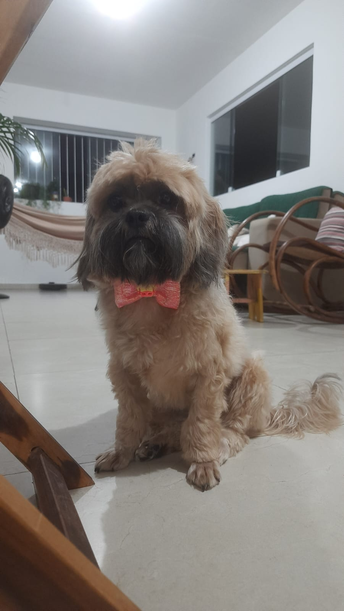
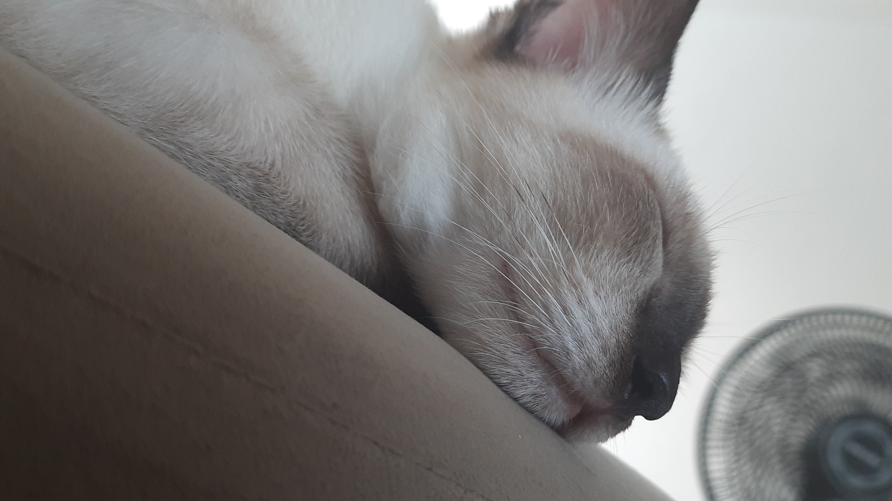
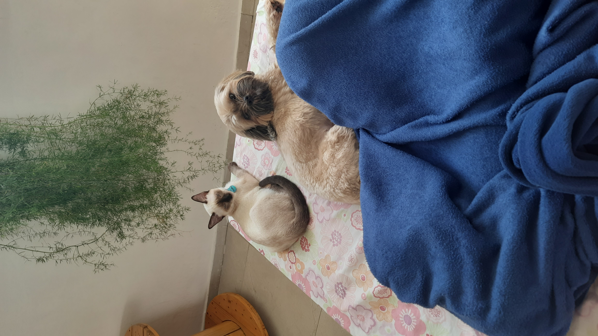

Introduction
Hi, my name is Arthur Cavalcanti. I was born in 1990, I say that because I'm actually having to calculate in order to rememebter how old I am. Somehow I got merried, got two dogs and a nice job.
My wife is Gabriela Alves. I think she likes me. We are pretty happy with our simple life. You see, we are not people people, we like to be with ourselves, and our dogs, and that is it.
We like to watch movies and tv shows. She likes to take care of plants, I like to be in my computer. If we could, we would travel more, but money is always tight.


Walter White
This is Walter, I think he must have been the best cat in the world. He got to us when he was only 3 months old.


He was born with cancer, by the time we realized, it was already too late. But he'll live with us forever.
Work
I work as a Software Engineer, no formal education, but I've always being "into" computers, so I guess it was only a matter of time.
Studies
For the longest time I felt I was the king of fresh start. Living in tutorial hell. Took some effort but I think I'm capable of some advanced stuff now.
Future
Hope I get to retire to a house with a pool and a bath. Hope Gabi stays with me till then. Hope life will be good.